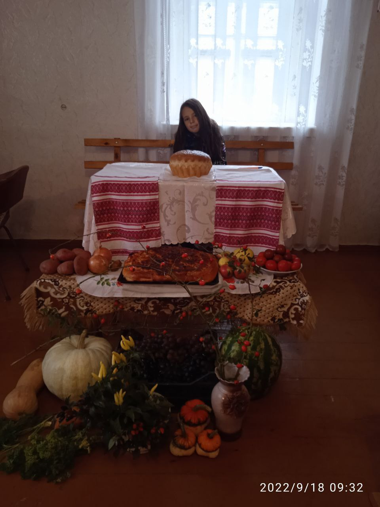

Настя фотографується на память
-
Дуже красиве фото
На це свято всі приносять різноманітні плоди, роблять красиву декорацію.Приносять такі овочі як картопля, тиква, кавун, виноград і навіть цибульку
-

Сергійко Семененко!
Сергійко рзом з Настею співали чудову пісню. А ще вони чекали обід, тому що бабка приготувала смачні страви
-
Ось таке свято
Осінь має свої переваги. І свята роблять особливий акцент в нашомму житті.
Бажаю всім
- Божої наснаги
- Терпіння
- Страху Божого
- Мудрості
- Спокою